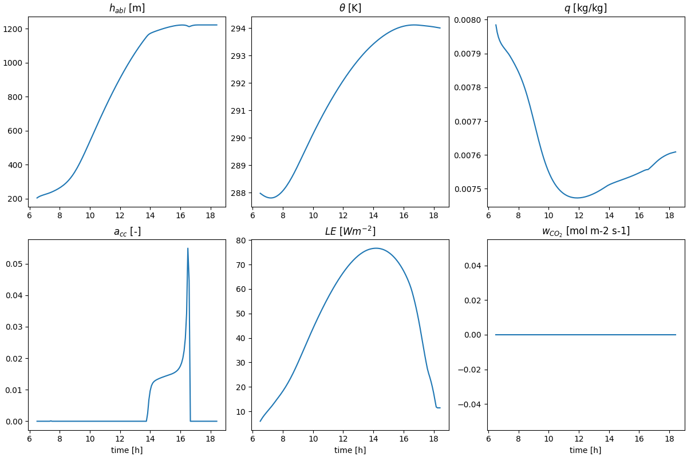

ABC Model#
A simple model coupling biosphere and atmosphere made fully differentiable using JAX built up on the CLASS model.
Installation (MacOS and Linux)#
These instructions work on Linux and MacOS and assume that python with pip is installed already.
Install with
pip install git@github.com/EarthyScience/abc-model
or clone the repo and make an editable install inside your local repo using
pip install -e .
If you want to use JAX on GPUs, please re-install JAX using the [gpu] tag in an environment with GPUs installed,
but this is not necessary to run the examples in this repository!!
Installation (Windows)#
On Windows we need some more utilities for JAX to work properly, also installing python is not as straigforward. For JAX to run, you first need the Microsoft Visual C++ redistributable found here, which will require a system restart to function. Note that you might want to install uv before the restart, as the PATH update might require a restart as well (see below).
Now clone the repo and cd into it. The following section shows how to set up a python environment with uv, if you have python with pip running you can skip it.
UV environment#
First install uv via the terminal with
powershell -ExecutionPolicy ByPass -c "irm https://astral.sh/uv/install.ps1 | iex"
You can check that uv is available and running by typing uv in your terminal, if you receive an error, you will have to add uv to your path manually or restart your computer. Here, or when executing uv scripts to activate environments windows execution policiy might stop you, if that is the case you need to change or bypass it.
After uv is installed and running, create a virtual environment in the abc-model directory by running
uv venv --python 3.13.0
this will also show you the command needed to activate the venv, which should look similar to
.venv\Scripts\activate
Lastly, while in the abc-model directory, install the abc-model with uv:
uv pip install -e .
Quick example#
To setup the coupler we will always use 3 components:
Radiation model (rad);
Land model (land);
Atmosphere model (atmos).
Each model is a class that is initialized with model-specific parameters and has states that are updated during the integration.
import abcmodel
# radiation
rad_model = abcmodel.rad.StandardRadiationModel()
rad_state = rad_model.init_state()
# land
biosphere_model = abcmodel.land.biosphere.JarvisStewartModel()
biosphere_state = biosphere_model.init_state()
soil_model = abcmodel.land.soil.StandardSoilModel()
soil_state = soil_model.init_state()
surface_model = abcmodel.land.surface.StandardSurfaceModel()
surface_state = surface_model.init_state()
land_model = abcmodel.land.StandardLandModel(
biosphere=biosphere_model,
soil=soil_model,
surface=surface_model,
)
land_state = land_model.init_state(
biosphere_state=biosphere_state,
soil_state=soil_state,
surface_state=surface_state,
)
# atmos
surface_layer_model = abcmodel.atmos.surface_layer.ObukhovModel()
surface_layer_state = surface_layer_model.init_state()
mixed_layer_model = abcmodel.atmos.mixed_layer.BulkModel()
mixed_layer_state = mixed_layer_model.init_state()
cloud_model = abcmodel.atmos.clouds.CumulusModel()
cloud_state = cloud_model.init_state()
atmos_model = abcmodel.atmos.DayOnlyAtmosphereModel(
surface_layer=surface_layer_model,
mixed_layer=mixed_layer_model,
clouds=cloud_model,
)
atmos_state = atmos_model.init_state(
surface=surface_layer_state, mixed=mixed_layer_state, clouds=cloud_state
)
All set - let’s integrate our model by defining the timestepping and the run time.
# time step [s]
inner_dt = 15.0 # this is the "running" time step
outter_dt = 60.0 * 30 # this is the "diagnostic" time step
# total run time [s]
runtime = 12 * 3600.0
# start time of the day [h]
tstart = 6.5
# coupler and coupled state
abcoupler = abcmodel.ABCoupler(rad=rad_model, land=land_model, atmos=atmos_model)
state = abcoupler.init_state(rad_state, land_state, atmos_state)
# run run run
time, trajectory = abcmodel.integrate(
state, abcoupler, inner_dt, outter_dt, runtime, tstart
)
To plot the results, we just have to use the plotting function.
# plot output
abcmodel.plotting.simple(time, trajectory)
plt.show()
Which should give us something like the figure below.

Components and Functionalities#
The model’s components are supposed to be documented in a structured way.
In each model page, we can see two main classes: InitConds and Model.
InitConds is a data class containing all the variables that make part of the state of the model
(and thereby of the CoupledState) and will be updated by the model during run (diagnostics)
or integrate (prognostics, if any).
The Model class contains parameters, the run method and sometimes an integrate method.
Inside run, variables x, y, etc, are updated using methods compute_x, compute_y, etc; and these
methods are documented in the order that they are called. The goal is that a reader can essentially read the
equations of each variable computation as they are done by our models and learn how things work from that.
Somemtimes, the state is updated inside a more complicated method like update_something. This is sometimes
used for the modularity of our models (models inheriting other models). In that case, the models follow the same order
of updates of the parent model, but all methods of the child model overwrite the original ones.
Components#
Functionalities#
See also#
For a more advanced model, see ClimaLand.jl.